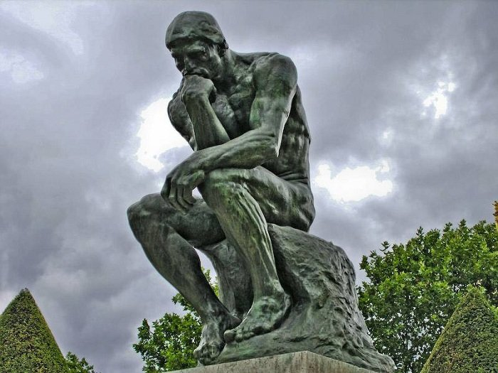

“Рыба ищет, где глубже, а человек - где лучше”. Народная мудрость гласит, что человек ищет лучшего, чем имеет - лучшего места, лучших отношений, судьбы. Ищет каких-то благ, которые приведут его в лучшее состояние. Ищет потому, что не удовлетворен имеющимся у него, а если перестает искать, то значит, что удовлетворен найденным и перестал нуждаться в чем-либо еще. Парадокс, но даже зло другим людям делают для того, чтобы самому себе стало лучше. И едва ли найдется человек, который будет хотеть худшего для себя. Итак, если все заняты поиском лучшего для себя, то в этом и состоит смысл жизни - найти и получить лучшее для себя, такое благо, которое доставит полное удовлетворение, чтобы не нужно было больше ничего искать. Причем просто найти недостаточно, нужно обладать благом в полной мере. Это как если голодный найдет кусок хлеба, но не станет его есть - находка никак не поможет утолить голод, нужда не пропадет.
Необходимость искать что-то вовне означает, что человек не самодостаточен. Иначе не было бы необходимости что-то искать. Найденные и обретенные блага делают человека счастливым. Счастье - это состояние души (состояние - совокупность основных параметров и характеристик какого-либо объекта, явления или процесса в определенный момент (или интервал) времени). Противоположное ему состояние - несчастье. Человек испытывает счастье, когда ему хорошо, а когда плохо - это несчастье.
Итак, если каждый хочет для себя лучшего, то это значит, что все в той или иной мере несчастны, и это несчастье - неестественное состояние. Например, болезнь неестественна для человека, так как хочется излечиться от нее, а здоровье - естественно, так как от этого состояния никто избавиться не хочет. Таким образом, у каждого человека есть стремление прийти в естественное состояние счастья, и избавиться от неестественного несчастья. Плохое состояние беспокоит человека, и даже если он не осознает, то инстинктивно хочет избавиться от плохого и вернуться в хорошее состояние. Голодный хочет стать сытым, замерзший - согреться, грустный - развеселиться. Но чтобы достичь цели, нужно подключить разум и осознать текущее положение, чтобы найти подходящее средство, которое поможет, а не навредит (так бывает часто с неразумным самолечением). Это средство называется “благо”.
От свойств благ зависит, насколько прочным будет счастье их обладателя, как долго продержится это состояние души. Блага бывают материальные и нематериальные - душевные и духовные. Материальные - еда, вещи, деньги, богатство и т.п. Душевные - красота, здоровье, слава, уважение, власть, удовольствие и прочее. Духовные - любовь, радость, душевный мир, покой. Материальные блага приобретают, чтобы получить блага душевные. Еда нужна, чтобы быть сытым, здоровым, довольным. Богатством надеются приобрести славу, уважение и власть. Душевными благами в свою очередь ожидают приобрести духовные - радость, покой, душевный мир, иными словами - счастье. Но материальные и душевные блага для человека внешние. Все материальные предметы существуют вне человека и независимо от него. Слава и уважение - это чувства и эмоции, которые испытывают и проявляют другие люди. Власть - это следствие добровольного подчинения других людей. И только радость, любовь, мир и покой присущи самому человеку.
Однако, если человек ощущает себя счастливым от славы, почета, уважения, власти или удовольствия, то наступит момент, когда материальные блага закончатся и перестанут поддерживать блага душевные - тогда и счастье пройдет, испарится. И, чтобы не потерять это непрочное счастье, человек вынужден всю жизнь искать и пополнять запасы материальных благ. Но и эта гонка за временными благами не вечна - в конце концов смерть забирает у человека всё материальное и душевное. Человек уходит из этого мира, и не может не может взять с собой ни славу, ни богатство, всё остается здесь, а тело, каким бы здоровым ни было, сгниет.
Но после смерти человек не исчезает, а продолжает жить иной жизнью, в ином, духовном мире. И если в этом мире он жил ради временных благ, которые становятся недоступны после смерти, то он лишится радости, покоя, удовольствия, которые подпитывались материальными и душевными благами.
А вот духовные блага не зависят от материальных или душевных. Голодный может любить, бедный может иметь душевный мир и покой, больной может радоваться. За деньги любовь не купишь, и власть в этом не поможет - насильно мил не будешь. И, с другой стороны, того, кто любит, радуется, имеет душевный мир и покой вполне можно назвать счастливым.
После сказанного выше может показаться, что материальные и душевные блага - это и не блага вовсе, раз они не могут обеспечить вечное счастье. Нет, все это по своей природе “хорошо весьма” (Быт.1:31). Но материальные блага и всё, что связано с миром, подвержено изменениям, и может быть испорчено или утрачено, что и происходит в момент смерти, когда человек теряет все материальное и душевное. Поэтому их невозможно назвать вечным, истинным благом, и называются они вещами временными. Истинное счастье, или блаженство, человек обретет только тогда, когда найдет вечное благо, которое невозможно отнять, потерять или уничтожить, которое не может умереть, закончиться, исчезнуть, или измениться.
Что такое вечность, и что можно назвать вечным? Вечное это то, у чего нет начала и нет конца, что “не зависит от времени, как одной из существеннейших форм всякого изменчивого бытия”, а потому не может измениться или исчезнуть. Кроме того, благо должно быть бесконечным, неуничтожимым, бессмертным, ничем не ограниченным. Мир и всё, что в нем, имеет начало, и изменяется, все вещи ограничены по свойствам и разрушаются. Из всего, что известно людям, только Одно Существо вечно, неизменно, неуничтожимо, бессмертно, не ограничено - это Бог. “Из откровения Божия можно заимствовать следующие понятия о существе и существенных свойствах Божиих: Бог есть Дух вечный, всеблагой, всеведущий, всеправедный, всемогущий, вездесущий, неизменяемый, вседовольный, всеблаженный.” (свт. Филарет Московский (Дроздов, “Пространный Христианский Катехизис Православной Кафолической Восточной Церкви”). Итак, можно обозначить цель, достигнув которой человек станет счастливым - это Бог.
Если о существовании Бога и Его свойствах мы знаем только из откровения (т.е. сверхъестественного способа передачи знаний), то и о том, как можно найти и обрести Бога, мы можем знать только из откровения. “Божественное откровение – это то, что Сам Бог пожелал открыть людям, чтобы они могли правильно и спасительно в Него веровать и достойно Его чтить” (свт. Филарет Московский (Дроздов, “Пространный Христианский Катехизис Православной Кафолической Восточной Церкви”, в. 11). Однако “не все люди способны непосредственно принять откровение от Бога по своей греховной нечистоте и немощи духа и тела” (там же, в. 13), поэтому откровение передается посредством Священного Предания и Священного Писания через избранных людей, пророков, апостолов и святых, которые жили святой жизнью и получили способность получать откровение от Бога.
Священное Предание - это знания о Боге и опыте богообщения, которые передают друг другу “словом и примером истинно верующие и чтущие Бога люди” (там же, в.17), чтобы научить, как найти Бога и пребывать с Ним. Священное Писание - “это книги, написанные Святым Духом через освящённых от Бога людей, называемых пророками и апостолами. Обычно эти книги называют Библией” (там же, в. 19), и дано для того, чтобы по нему проверять, не уклонились ли мы от пути к Богу. Поскольку Священное Предание передается от человека к человеку, а люди могут заблуждаться и искажать Предание, нужно постоянно сверять свое понимание пути к Богу со Священным Писанием и его толкованием, написанным Святыми отцами Православной Церкви.
Святые отцы - это люди, которые нашли Бога и своей праведной жизнью и чудесами показали это. Они подробно разъяснили Священное Писание, рассказали о своем опыте приближения к Богу и жизни с Ним, о трудностях на пути к Богу, и как их преодолеть, о возможных опасностях и ошибках, и о том, как их избежать или исправить, и изложили учение о вере в Бога и Таинства, которые Он открывает, надежде на Бога и о средствах утверждения в ней, и о любви к Богу и ко всему, что Он повелевает любить. Это учение и есть учение о пути к Богу и вечному блаженству, счастью, то есть о смысле жизни каждого человека.
В этих рассуждениях мы пришли к важному выводу, который ориентирует нас в жизни, как компас и карта на местности. От абстрактного поиска счастья мы пришли к весьма конкретному смыслу жизни - поиску Бога. Мы обозначили цель, и теперь можем проложить к ней маршрут, написать план для достижения этой цели, тем более что сегодня как никогда доступны Священное Писание и Предание, изложенное Святыми отцами Православной Церкви. Нужно только начать применять к своей жизни те советы, можно сказать методическое руководство, которое оставили нам Отцы Церкви. Перечень книг, которые можно использовать для освоения учения о вере, надежде и любви приводится ниже.